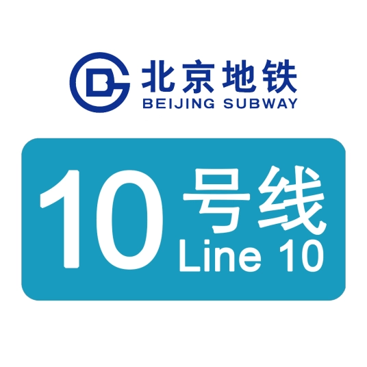
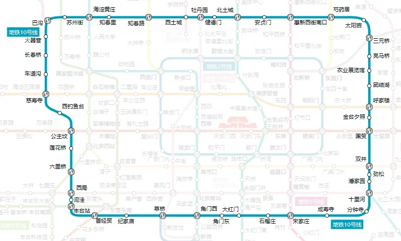
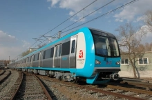

线路走向

车辆设施
DKZ15

北京地铁10号线列车采用了DKZ15列车（车号：W401-W443），昵称为蓝精灵。在运行时比北京地铁5号线更加平稳快速。北京地铁10号线二期开通后，出现了翻版列车DKZ34（车号：10 044-10 116），后推出DKZ46车型。
北京地铁10号线列车为3动3拖6辆编组，定员1468人，最大载客量1880人，最高运行速度为80千米/小时；整车以浅蓝色的色调，除车身外有浅蓝色的色条外，车内的坐椅也采用浅蓝色。在温度保持方面，车厢内夏天采用单冷空调系统；冬天，安装在坐椅下面的热风装置即使在地面运行也能使车厢内保持16℃以上；车辆设计上体现了“科技、人文、绿色”的奥运主题。该车首次与国外先进设计公司进行联合设计；采用通用化、模块化设计思路，减少了车辆施工的工作量；采用网络控制、国产空调系统和乘客信息系统首次实现列车网络的集中控制；首次完成SIEMENS自动驾驶信号系统与车辆牵引、控制系统的集成；首次在不锈钢车下采用铝合金型材电线槽。